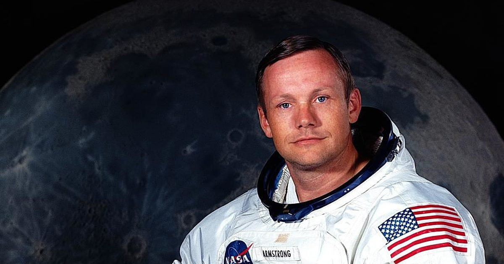
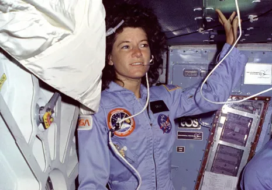
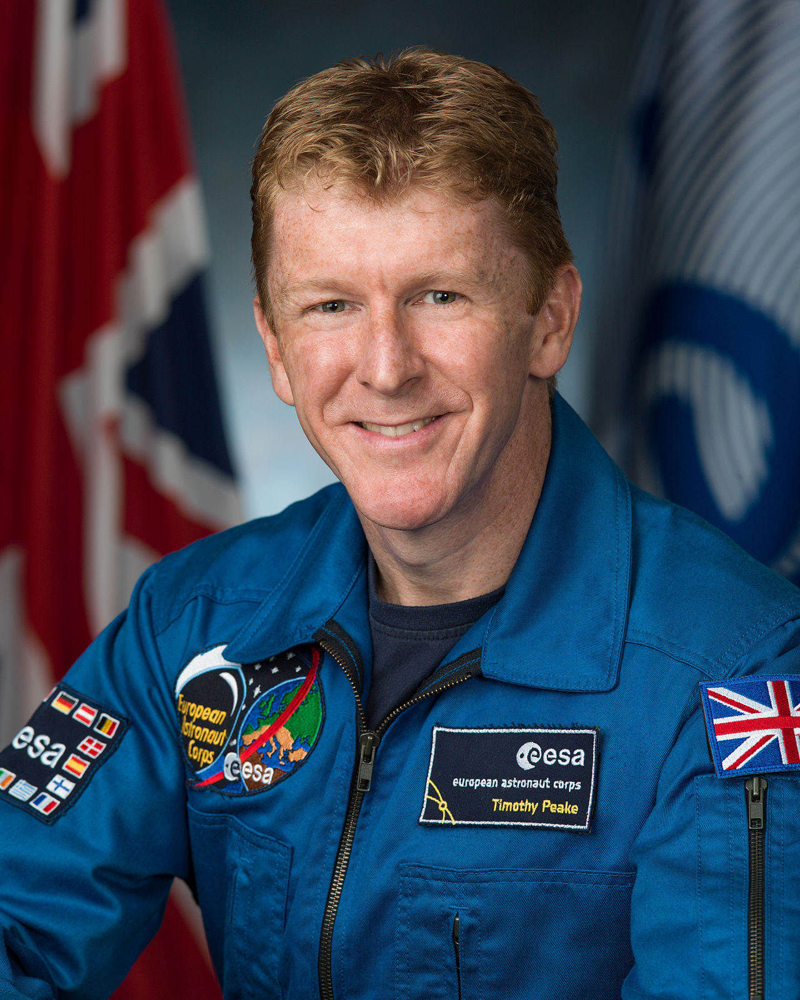

Astronaut
| Name |
Picture |
Information |
| Neil Armstrong |
 |
Neil Armstrong was the first person to walk on the moon. He was born on August 5, 1930 in Ohio, USA. He served as a naval aviator before joining NASA in 1962. He flew on the Gemini 8 and Apollo 11 missions.Armstrong was born and raised in Wapakoneta, Ohio. He entered Purdue University, studying aeronautical engineering, with the U.S. Navy paying his tuition under the Holloway Plan. He became a midshipman in 1949 and a naval aviator the following year. He saw action in the Korean War, flying the Grumman F9F Panther from the aircraft carrier USS Essex. After the war, he completed his bachelor's degree at Purdue and became a test pilot at the National Advisory Committee for Aeronautics (NACA) High-Speed Flight Station at Edwards Air Force Base in California. He was the project pilot on Century Series fighters and flew the North American X-15 seven times. He was also a participant in the U.S. Air Force's Man in Space Soonest and X-20 Dyna-Soar human spaceflight programs.Armstrong joined the NASA Astronaut Corps in the second group, which was selected in 1962. He made his first spaceflight as command pilot of Gemini 8 in March 1966, becoming NASA's first civilian astronaut to fly in space. During this mission with pilot David Scott, he performed the first docking of two spacecraft; the mission was aborted after Armstrong used some of his re-entry control fuel to stabilize a dangerous roll caused by a stuck thruster. During training for Armstrong's second and last spaceflight as commander of Apollo 11, he had to eject from the Lunar Landing Research Vehicle moments before a crash. |
| Sally Ride |
 |
Sally Ride was the first American woman to go to space. She was born on May 26, 1951 in California, USA. She joined NASA in 1978 and flew on the STS-7 and STS-41-G missions. After leaving NASA, she became a professor of physics at the University of California, San Diego.Ride was a graduate of Stanford University, where she earned a Bachelor of Science degree in physics and a Bachelor of Arts degree in English literature in 1973, a Master of Science degree in physics in 1975, and a Doctor of Philosophy in physics in 1978 for research on the interaction of X-rays with the interstellar medium. She was selected as a mission specialist astronaut with NASA Astronaut Group 8, the first class of NASA astronauts to include women. After completing her training in 1979, she served as the ground-based capsule communicator (CapCom) for the second and third Space Shuttle flights, and helped develop the Space Shuttle's robotic arm. In June 1983, she flew in space on the Space Shuttle Challenger on the STS-7 mission. The mission deployed two communications satellites and the first Shuttle pallet satellite (SPAS-1). Ride operated the robotic arm to deploy and retrieve SPAS-1. Her second space flight was the STS-41-G mission in 1984, also on board Challenger. She spent a total of more than 343 hours in space. She left NASA in 1987. |
| Yuri Gagarin |
 |
Yuri Gagarin was the first person to go to space. He was born on March 9, 1934 in Russia. He was a Soviet Air Force pilot before being selected for the Vostok 1 mission. He orbited the Earth once on April 12, 1961. Hailing from the village of Klushino in the Russian SFSR, Gagarin was a foundryman at a steel plant in Lyubertsy in his youth. He later joined the Soviet Air Forces as a pilot and was stationed at the Luostari Air Base, near the Norway–Soviet Union border, before his selection for the Soviet space programme alongside five other cosmonauts. Following his spaceflight, Gagarin became the deputy training director of the Cosmonaut Training Centre, which was later named after him. He was also elected as a deputy of the Soviet of the Union in 1962 and then to the Soviet of Nationalities, respectively the lower and upper chambers of the Supreme Soviet.Vostok 1 was Gagarin's only spaceflight, but he served as the backup crew to Soyuz 1, which ended in a fatal crash, killing his friend and fellow cosmonaut Vladimir Komarov. Fearful that a high-level national hero might be killed, Soviet officials banned Gagarin from participating in further spaceflights. After completing training at the Zhukovsky Air Force Engineering Academy in February 1968, he was again allowed to fly regular aircraft. However, Gagarin died five weeks later, when the MiG-15 that he was piloting with flight instructor Vladimir Seryogin crashed near the town of Kirzhach. |
| Buzz Aldrin |
 |
He was the second person to walk on the moon during the Apollo 11 mission in 1969. He was born on January 20, 1930, in New Jersey, USA. Aldrin initially applied to join the astronaut corps when NASA's Astronaut Group 2 was selected in 1962. His application was rejected on the grounds that he was not a test pilot. Aldrin was aware of the requirement and asked for a waiver but the request was turned down. On May 15, 1963, NASA announced another round of selections, this time with the requirement that applicants had either test pilot experience or 1,000 hours of flying time in jet aircraft. Aldrin had over 2,500 hours of flying time, of which 2,200 was in jets.His selection as one of fourteen members of NASA's Astronaut Group 3 was announced on October 18, 1963. This made him the first astronaut with a doctoral degree which, combined with his expertise in orbital mechanics, earned him the nickname "Dr. Rendezvous" from his fellow astronauts. Although Aldrin was both the most educated and the rendezvous expert in the astronaut corps, he was aware that the nickname was not always intended as a compliment. Upon completion of initial training, each new astronaut was assigned a field of expertise; in Aldrin's case, it was mission planning, trajectory analysis, and flight plans
|
| Peggy Whitson |
 |
She is an American astronaut who holds records for most time spent in space by a woman (665 days) and most spacewalks by a woman(10). From 1989 to 1993, Whitson worked as a research biochemist in the Biomedical Operations and Research Branch at NASA-JSC. From 1991 to 1993, she served as technical monitor of the Biochemistry Research Laboratories in the Biomedical Operations and Research Branch. From 1991 through 1992, she was the payload element developer for Bone Cell Research Experiment (E10) aboard SL-J (STS-47), and was a member of the US-USSR Joint Working Group in Space Medicine and Biology. In 1992, she was named the project scientist of the Shuttle-Mir Program (STS-60, STS-63, STS-71, Mir 18, Mir 19), and served in this capacity until the conclusion of the Phase 1A Program in 1995. From 1993 through 1996, Whitson held the additional responsibilities of the deputy division chief of the Medical Sciences Division at NASA-JSC. From 1995 to 1996, she served as co-chair of the U.S.-Russian Mission Science Working Group.
|
| Tim Peake |
 |
A British astronaut who spent six months aboard the International Space Station in 2016. Peake was selected to join the European Space Agency astronaut corps in 2009, flew to the ISS in 2015/16, and retired from active service in 2023. Peake beat over 8,000 other applicants for one of the six places on the ESA's new astronaut training programme. The selection process included taking academic tests, fitness assessments and several interviews. Peake moved to Cologne with his family for the ESA training.Peake was the first British or UK-born person to fly into space without a private contract (as did Helen Sharman, Mark Shuttleworth, and Richard Garriott) and/or foreign citizenship (held by astronauts Michael Foale, Gregory H. Johnson, Piers Sellers, Nicholas Patrick, Shuttleworth, and Garriott). On 16 April 2012, NASA announced that Peake would serve as an aquanaut aboard the Aquarius underwater laboratory during the NEEMO 16 undersea exploration mission, scheduled to begin on 11 June 2012 and last twelve days. The NEEMO 16 crew successfully "splashed down" at 11:05 am on 11 June. On the morning of 12 June, Peake and his crewmates officially became aquanauts, having spent over 24 hours underwater. The crew safely returned to the surface on 22 June.
|